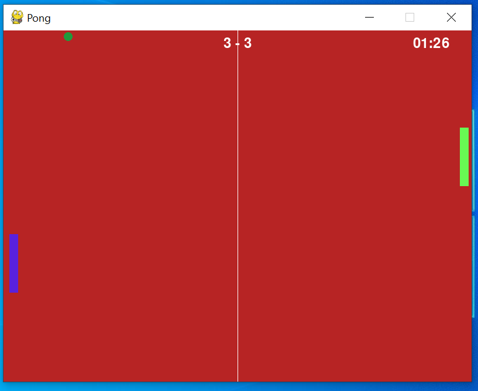
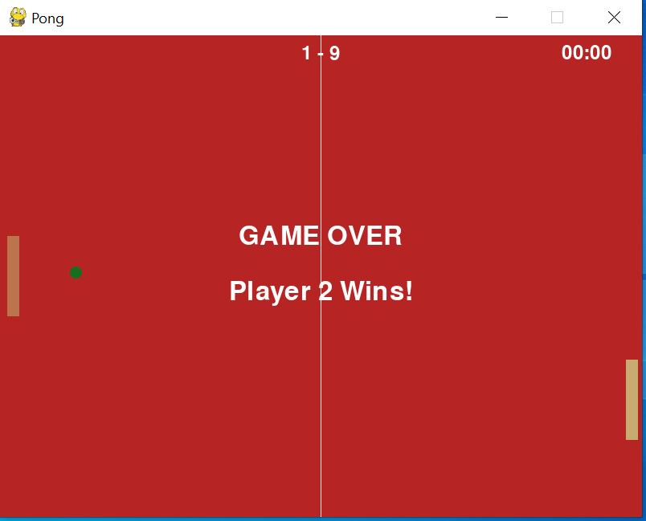
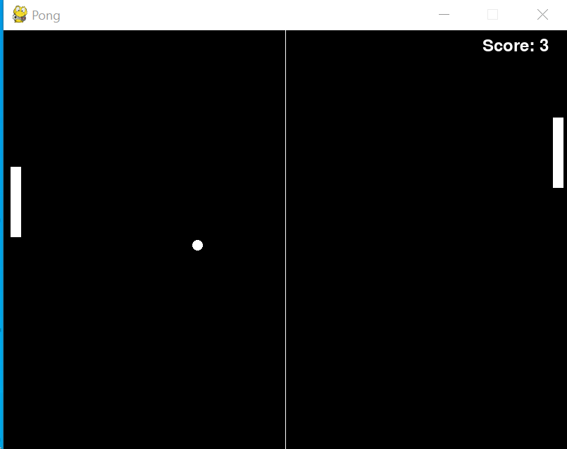
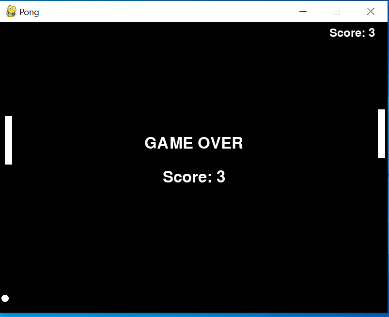

An interactive 2 player pong game with a theme of Red Sox
"RedSox Pong" is a video game that provides a leisurely environment for friends to enjoy together. It was created by Songting, Xiaoqing, and Omar from Babson who enjoy playing ping pong and watching baseball games. Since we all live in Boston, we wanted to pay tribute to the home team with the name "RedSox Pong".
The game features two modes: Classic and Team. In Classic mode, two players control paddles and try to prevent the ball from passing them. Each player scores a point when the other misses. To enhance the game's visual appeal, the ball and paddles change to a random color when hit. The red background reflects the RedSox theme. In Team mode, two players must prevent the ball from hitting the vertical wall. Their scores increase with each successful hit, but after every 5 hits, the ball's speed increases, creating a progressively faster pace. We have added challenges to make the game more exciting. If the ball touches the wall, the game is over.
   This is created by Xiaoqing Mei, Omar Abdellah, and Songting Liu